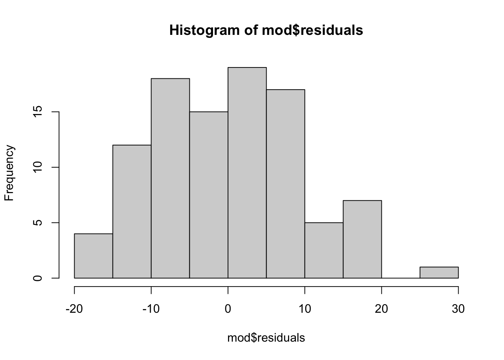
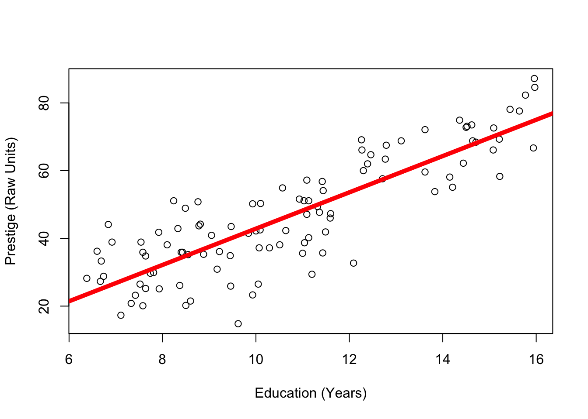

This week, we will continue practicing how to work with, interpret, and compare linear models across a variety of types of data. Specifically, you’ll learn :
how to interpret a linear model when the IV is categorical with more than three levels.
how (and why) to interpret a linear model when the variables have been z-scored (spoiler: this is a correlation)
how to quickly export a comparison of multiple linear models in a way that looks nicer that default R output :)
Part 1 : The Linear Model with a Categorical IV…with THREE+ Levels
ImportantGOAL
In Chapter 7, we showed how the linear model could be adapted to predict a numeric DV when the IV was a categorical variable with two levels. And guess what? When the IV has more than three levels, we can use the same linear model. Hooray! The only difference is now you have multiple levels that differ from the intercept (or “reference group”).
Let’s see if some good ol’ fashioned YOUTUBE VIDEOS OF A DISEMBODIED VOICE can explain this.
Video 1 : Defining the Model with the lm() function
Video 4 :\(R^2\)for a Categorical Model with 3-Levels.
par(mfrow =c(1,2))plot(presto$prestige, main ="The Mean as Our Prediction")abline(h =mean(presto$prestige), )plot(presto$prestige, col = presto$type, pch =19, main ="The Model (Job Type) As Our Prediction")abline(h =coef(mod)[1] +coef(mod)[2], col ='red', lwd =5)abline(h =coef(mod)[1] +coef(mod)[3], col ='green', lwd =5)abline(h =coef(mod)[1], col ='black', lwd =5) # blue collar
In a linear model, the slope describes the relationship between the two variables in whatever units the DV and the IV were measured in. Sometimes, these units can interfere with our interpretation of a linear model, and so we will want to transform the units in order to improve our interpretation.
For example, knowing that the relationship between years of education and income has a slope of b = 12870 might seem really large, but if the units of income are measured in 1/10 of a penny, then the “large” slope would be misleading. If the units were in some cryptocurrency that had units of indeterminate size because it’s made up, then the slope would be totally meaningless.
There are different ways to transform the units of a variable to help improve the interpretation. For example, our slope of b = 12870 in units of 1/10 a penny could be divided by 1000 to be translated into a slope of b = 12.870 in units of dollars.
However, sometimes researchers want to standardize the units of measurement for a variable so they can be compared across models and studies.
Hopefully, the idea of “standardizing” a variable feels somewhat familiar, as it’s the basis for the z-score that we learned about in Chapter 4.
WarningRECAP : Uhhh…professor I do not remember what a z-score is. Can you please re-explain z-scoring???
A z-score describes how far an individual score falls above and below the mean (a residual!) in units of standard deviation. Z-scores are used to help give context to data - how far above or below the average is an individual (their distance from the mean), compared to the standard deviation (the average amount that people differ from the mean).
Z-scores can also be useful when the units of measurement don’t have any meaning. For example, let’s say you take a job on Jeff Bezo’s Mars ™ and learn that a job pays 1298723 BezosBucks. Is this a little? A lot? Well, knowing that it’s 120 BezosBucks above the average income might give you some indication that you are going to be better off than others on Jeff Bezos’ Mars ™. But how much better off?
If you learn the standard deviation of income on Jeff Bezos’ Mars ™ is 12, then your above average salary is 10 times more than what you’d expect the average person to differ from the average salary - you are gonna be VERY RICH compared to the average resident - drinking fresh water and breathing air created by the finest asteroidoxygenators!
But if the standard deviation is 1200, then your z-score = .1, which means you are only a tenth of a standard deviation above average, which means that you will be lumped with the masses on Jeff Bezos’ Mars - slurping recycled air with the rest of us.
Why Z-Score in a Model
So in our prestige example, the slope of 5.36 means that for every 1-unit increase in years of education, our prediction of prestige goes up by 5.36 points. Is that a little change in prestige? A lot? It’s hard to know, since prestige is not tangible, but a human-created construct.
Which brings us back to z-scores. If we z-score both the DV and the IV in our linear model, the (arbitrary) units of measurement disappear, and both variables are described in terms of standard deviation. This allows us to better relate each variable to another. To z-score the variables in a model, you just use the scale() function inside the linear model.
Click the tabs to switch between Raw Units and Z-Scored Units. What changes? What stays the same??
Here’s the graph, in the original units of measurement.
plot(prestige ~ education, data = presto, ylab ="Prestige (Raw Units)",xlab ="Education (Years)") mod2 <-lm(prestige ~ education, data = presto)abline(mod2, lwd =5, col ='red')
And here’s the result of the model.
round(coef(mod2), 2)
(Intercept) education
-10.73 5.36
Here’s the graph when the DV and IV are Z-Scored.
plot(scale(prestige) ~scale(education), data = presto, ylab ="Prestige (Units of Standard Deviation)",xlab ="Education (Units of Standard Deviation)") zmod2 <-lm(scale(prestige) ~scale(education), data = presto)abline(zmod2, lwd =5, col ='red')

And here’s the result of the model.
round(coef(zmod2), 2)
(Intercept) scale(education)
0.00 0.85
Interpretation of Z-Scores
As before, the data do not change - the only thing that changes are the units in which the DV and IV are measured (and thus the units of the intercept and slope).
The intercept of a z-scored model will always be zero (or something very near zero). Remember that a z-score of zero means average, and the intercept is defined as “the predicted value of the DV when all IVs are zero.” This means that….
…the predicted value of the DV is zero when the IV is zero.
…someone with the average IV (IV = z-score of zero) is predicted to have the average DV (DV = z-score of zero), or
The slope of a z-scored model describes the relationship between the variables in units of standard deviation. When both the DV and IV share the same units of measurement, the slope becomes a lot more informative, since it tells you exactly how linked the two variables are. Knowing that for every 1-unit increase in years of education, the predicted prestige goes up by 5.36 (the slope) makes far less sense to me than knowing that for every standard deviation increase in years of education, the predicted prestige goes up by .85.
The maximum slope of a z-scored linear model (with one IV) is 1 (one). This would be a perfect positive relationship, where a one standard deviation increase in the IV is equal to a one standard deviation increase in the DV.
The minimum slope of a z-scored linear model (with one IV) is -1 (negative one). This would be a perfect negative relationship, where a one standard deviation increase in the IV is equal to a one standard deviation decrease in the DV.
A slope of zero would mean that there’s no relationship between the two variables.
Wait a minute…that’s….CORRELATION COEFFICIENT’S MUSIC.
Yes, class, a correlation - the relationship between two variables, is just the standardized (z-scored) slope of a linear model (with one IV).
cor(presto$prestige, presto$education) # the correlation
[1] 0.8501769
coef(zmod2)[2] # the slope of our z-scored model
scale(education)
0.8501769
See the video below for another example, from the narcissism dataset.
Video Example : Age and Narcissism (Z-Scored)
The video above walks through z-scoring in another example, from the narcissism dataset.
Part 3 : Presenting Linear Models in Tables and Written Human Language
A few final notes about how to organize and present the results of your linear models. Since we are now juggling lots of information, it can feel overwhelming!
To recap, in Part 1, we defined the following linear model :
summary(mod)
Call:
lm(formula = prestige ~ type, data = presto)
Residuals:
Min 1Q Median 3Q Max
-18.2273 -7.1773 -0.0854 6.1174 25.2565
Coefficients:
Estimate Std. Error t value Pr(>|t|)
(Intercept) 35.527 1.432 24.810 < 2e-16 ***
typeprof 32.321 2.227 14.511 < 2e-16 ***
typewc 6.716 2.444 2.748 0.00718 **
---
Signif. codes: 0 '***' 0.001 '**' 0.01 '*' 0.05 '.' 0.1 ' ' 1
Residual standard error: 9.499 on 95 degrees of freedom
(4 observations deleted due to missingness)
Multiple R-squared: 0.6976, Adjusted R-squared: 0.6913
F-statistic: 109.6 on 2 and 95 DF, p-value: < 2.2e-16
In Part 2, we defined the following linear model :
mod2 <-lm(prestige ~ education, data = presto)summary(mod2)
Call:
lm(formula = prestige ~ education, data = presto)
Residuals:
Min 1Q Median 3Q Max
-26.0397 -6.5228 0.6611 6.7430 18.1636
Coefficients:
Estimate Std. Error t value Pr(>|t|)
(Intercept) -10.732 3.677 -2.919 0.00434 **
education 5.361 0.332 16.148 < 2e-16 ***
---
Signif. codes: 0 '***' 0.001 '**' 0.01 '*' 0.05 '.' 0.1 ' ' 1
Residual standard error: 9.103 on 100 degrees of freedom
Multiple R-squared: 0.7228, Adjusted R-squared: 0.72
F-statistic: 260.8 on 1 and 100 DF, p-value: < 2.2e-16
When writing about multiple models, it can be useful to organize the results into a regression table. A good regression table will report the relevant statistics you need to fully understand each model. This includes the predictive statistics like the intercept, slope(s), and \(R^2\) - as well as some relevant inferential statistics. Many regression tables only report the p-value (sometimes using stars to indicate whether a slope is statistically significant). However, I recommend also reporting standard error values (or 95% Confidence Intervals), since this gives the reader more information about sampling error (which the p-value is based on).
There’s a neat package in R called jtools that quickly helps you produce a publication-worthy table using the function export_summs(), alongside the models that you defined in earlier R code.
library(jtools)export_summs(mod, mod2)
Model 1
Model 2
(Intercept)
35.53 ***
-10.73 **
(1.43)
(3.68)
typeprof
32.32 ***
(2.23)
typewc
6.72 **
(2.44)
education
5.36 ***
(0.33)
N
98
102
R2
0.70
0.72
*** p < 0.001; ** p < 0.01; * p < 0.05.
You can read more about jtools from the help file by running ?jtools, or read the jtools website. For example, there are ways you can adapt the code for jtools to add 95% confidence intervals, change the names of your coefficients to help readers, round to two decimal places, and standardize the variables in your model. Whew!
export_summs(mod, mod2,error_format ="CI = [{conf.low}, {conf.high}]",coefs =c("Intercept"="(Intercept)","Professional (vs. Blue Collar)"="typeprof","White Collar (vs. Blue Collar)"="typewc","Years of Education"="education"),number_format ="%.2f",scale =TRUE, transform.response =TRUE)
Table : Predicting Prestige from Job Type and Education
Model 1
Model 2
Intercept
-0.69 ***
0.00
CI = [-0.86, -0.52]
CI = [-0.10, 0.10]
Professional (vs. Blue Collar)
1.89 ***
CI = [1.63, 2.15]
White Collar (vs. Blue Collar)
0.39 **
CI = [0.11, 0.68]
Years of Education
0.85 ***
CI = [0.75, 0.95]
N
98
102
R2
0.70
0.72
All continuous variables are mean-centered and scaled by 1 standard deviation. *** p < 0.001; ** p < 0.01; * p < 0.05.
I would then reference or write about the results in the following way :
In Model 1, I found a strong relationship between Job Type and Prestige (\(R^2\) = .70). Specifically, professional workers were rated as almost 2 standard deviations higher in prestige than blue collar workers (\(\beta\) = 1.89, 95% CI = [1.6, 2.1], p < .001). White collar workers were also rated as significantly higher in prestige than blue collar workers (\(\beta\) = .39, 95% CI = [0.1, .07]). These differences are illustrated in Figure 1 below.
Figure 1. Note : bc = Blue Collar, wc = White Collar, prof = Professional
In Model 2, I found that education was also strongly and significantly related to prestige - for every one standard deviation increase in education required for the job, the prestige of the job increases by .85 standard deviations (95% CI = [.75, .95], p < .001). This pattern is illustrated in Figure 2 below.
plot(prestige ~ education, data = presto, ylab ="Prestige (Raw Units)",xlab ="Education (Years)") mod2 <-lm(prestige ~ education, data = presto)abline(mod2, lwd =5, col ='red')

Together, these data suggest that both job type and the average years of education required for a job are strong predictors of how much prestige the job has.1
Okay, I hope that helped?! Let me know on Discord if you still have questions. However, I’ve recorded a video key for this week’s lab assignment that you can use as a guide, and I hope that this guide helps!
You may be thinking that education is also related to job type (this is something you can test in Quiz 7!). And if education IS related to job type, then maybe part of the reason that job type is related to prestige is because different types of jobs have different education requirements, and it’s education that’s really related to prestige. Or maybe it’s the other way around, and the only reason people’s fancy degrees seems related to prestige is because they are associated with certain job types? We will explore these questions later in the year when we get to Multiple Regression.↩︎